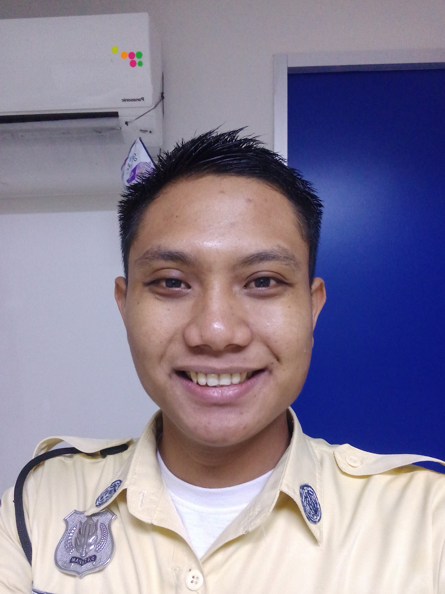

Dwi Raharjo

Summary
I am Dwi Raharjo, an aspiring full stack developer with a solid foundation in web development gained
through both formal education and specialized courses. While pursuing my studies at Universitas Terbuka,
I have also completed several courses focused on full stack development, equipping me with skills in front-end
and back-end technologies. My goal is to become a proficient full stack developer, capable of creating seamless
and efficient web applications. I am passionate about continuous learning and am eager to apply my knowledge to
real-world projects.
Education
Work Experience
Security Officer - Bank Cemtral Asia
August 2017 - present
- Warmly welcomed customers as they arrived, ensuring a positive first impression.
- Assisted customers who needed help, guiding them to the appropriate services and resources.
- Maintained office security and order by monitoring access points and performing regular patrols.
- Responded promptly and effectively to security incidents, ensuring the safety of staff and customers.
- Coordinated with other security personnel to manage and report security issues and breaches.
Skills
Technical Skills
- Front-End Development:
- HTML, CSS, JavaScript
- React
- Responsive Design and CSS Preprocessors (Sass, LESS)
- Back-Enc Development:
- Node.js
- PHP, Ruby on Rails, Python (Django, Flask)
- Database Management: SQL (MySQL, PostgreSQL), NoSQL (MongoDB)
- Full Stack Tools:
- RESTful APIs
- Version Control: Git, GitHub
- Docker, Kubernetes
- Continuous Integration/Continuous Deployment (CI/CD)
Soft Skills
- Problem-Solving
- Analytical Thinking
- Team Collaboration
- Time Management
- Communication Skills
- Adaptability
Other